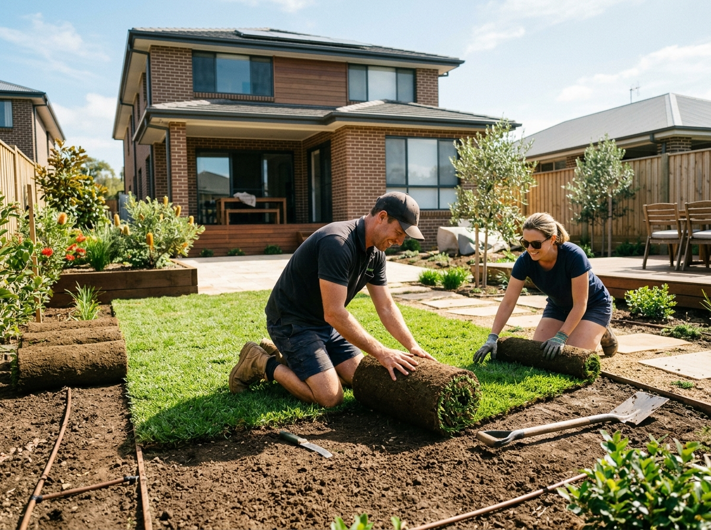

Guides
Turf Underlay: How Much You Need and How to Prepare for New Lawn

New turf is only ever as good as what's under it. Lay premium buffalo over compacted clay and it'll struggle for years; lay budget turf over a well-prepared underlay bed and it'll knit down in a fortnight. This guide covers how much turf underlay you need, how deep to spread it, and the prep steps that make the difference in Sydney conditions.
How much turf underlay do I need?
The standard depth for turf underlay under new lawn is 75–100mm. That's deep enough for roots to establish before they hit the native soil below.
| Lawn area | 75mm depth | 100mm depth |
|---|---|---|
| 20m² | 1.5m³ | 2m³ |
| 50m² | 3.75m³ | 5m³ |
| 100m² | 7.5m³ | 10m³ |
| 150m² | 11.25m³ | 15m³ |
Underlay is heavy — roughly 1.2 to 1.4 tonnes per cubic metre — so a typical suburban front lawn is a multi-bag order. Our coverage calculator converts your square metres to bags for you.
Prep in five steps
- Kill and clear. Spray out old grass and weeds a week or two ahead, then strip the dead material. Laying over living kikuyu is how you get kikuyu in your new buffalo.
- Rough-grade the base. Loosen the top of the existing soil so the underlay bonds to it rather than sitting as a separate layer.
- Spread the underlay. 75–100mm across the whole area, raked to fall slightly away from the house for drainage.
- Level and firm. Screed with a straight length of timber, then lightly roll or tread it down. Firm, not concrete — a boot print should leave a shallow impression.
- Lay turf same-day if you can. Water within 30 minutes of laying and keep it damp for the first fortnight.
What actually is turf underlay?
Ours is a sandy loam blended for drainage first — that's the property lawns live or die by in Sydney's clay-heavy suburbs. It spreads and screeds easily, holds enough organic matter to feed early root growth, and won't slump the way straight garden soil does. If you're topdressing an established lawn rather than laying new turf, look at our Top Dressing instead — it's finer, made to work into an existing profile.
Common mistakes
- Going too shallow. 25mm of underlay over builder's clay is cosmetic. Roots hit the hard layer and the lawn dries out in patches every summer.
- Using garden soil. Garden mixes are built for beds, not lawns — too rich, too slumpy. Use a purpose-blended underlay.
- Skipping the level. Every low spot becomes a puddle; every high spot gets scalped by the mower. Ten extra minutes with a screed board pays off for a decade.
Ordering and delivery
Turf underlay ships in 1-tonne bulk bags from our Wetherill Park yard. Delivery is quoted per job — call 0433 132 406 or request a quote with your suburb and lawn size and we'll confirm the delivery cost and day before dispatch.
Need materials for this project?
Premium soil, mulch, pebbles and sand delivered across Sydney — delivery quoted per job.